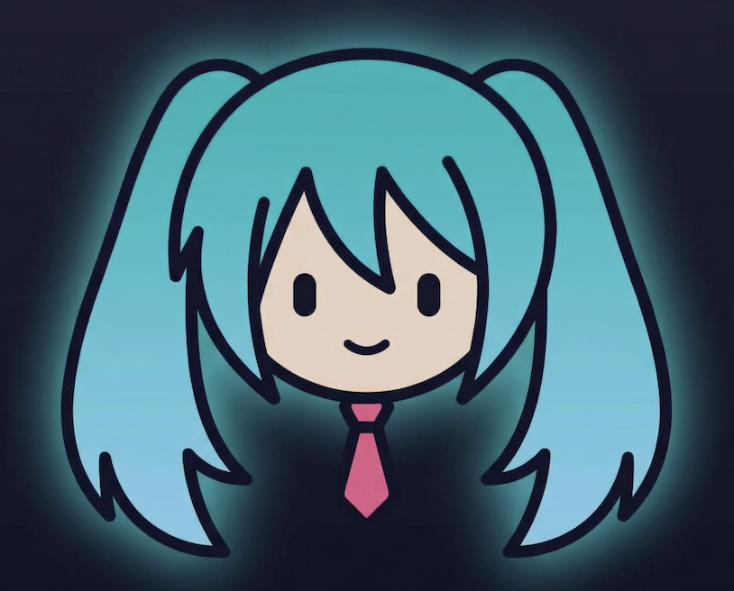

JanetJanet in charge. Step-by-step. May 1, 2026. €5,000.
Janet: Ready? First, let's make sure you have everything you need.
Janet: Let's get your account set up so you can receive funds.
Austria / EU: GoFundMe Ireland (EU Terms); SEPA to euro account. No PayPal—direct bank only.
Janet: Time to create the campaign. Paste the story, set the goal.
Story (paste from 04): Accessibility first. Imagine live captions and translation right in front of your eyes—for deaf/HoH, non-native speakers. Privacy-first, offline, no subscription. Janet Glasses on Brilliant Labs Halo. One purchase. No monthly fees.
Janet: Connect the dots—landing page, campaign link.
Janet: Go live. Share everywhere. Log it.
Twitter/X: Janet Glasses: privacy-first AI glasses for accessibility. Live captions + translation—offline, no cloud, no subscription. Phase 1 crowdfunding to validate on Brilliant Labs Halo. [link]
LinkedIn: We're crowdfunding Janet Glasses—privacy-first AI smart glasses for accessibility. Live captions and translation, offline, no subscription. Phase 1 validates on Brilliant Labs Halo. Back the campaign: [link]
Hacker News: Show HN: Janet Glasses – Privacy-first AI glasses for accessibility (gofundme.com). Substantive body: what it is, why it matters, what Phase 1 funds. Link campaign + what-can-janet-do.pages.dev
Channels: Twitter/X, LinkedIn, Reddit (r/accessibility, r/privacy, r/opensource), Hacker News, Janet community. One post per sub on Reddit; participate in comments.
Janet: Keep the momentum. Day 3 and Day 7.
Day 3: Thank you to everyone who has backed Janet Glasses so far. Your support funds Halo units, JanetXHalo v1 software, and an accessibility pilot. We're [X]% to our €5,000 goal. [link]
Day 7: One week in. Janet Glasses campaign: [X] backers, [Y]% of goal. Funding live transcription + translation—offline, no cloud. If you know someone who'd benefit from accessibility-first AI glasses, please share. [link]
Janet: Weekly updates until close. Then wrap it up cleanly.